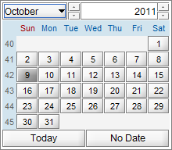
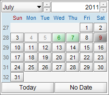

JCalendar New and Noteworthy
© Kai Toedter @COPYRIGHTYEAR@ |
|||
Version 1.4.1Repaint bug fixed in Nimbus L&FJMonthChooser now does not show artefacts in transparent area of the JMonthChooser. Version 1.4Extra Buttons for "Today" and "No Date"JCalendar provides 2 new methods for setting the today button and/or null date button visible. These 2 buttons are localized by default, but you could set your own labels if you don't like the default translations.  Date Evaluators With the interface IDateEvaluator you can add evaluators that decide if a date is special or invalid. Invalid dates can not be chosen. Both, special and invalid dates can have specific foregrounds and backgrounds. In the picture below, day 4 and 5 are invalid and day 6 and 7 are special. The special days can provide a tooltip that indicate why they are special.  Look & Feel Now JGoodies Looks 2.4.1 is included. The demo now uses different font for the Plastic Look & Feel so that unicode characters are displayed correctly. Also Nimbus Look & Feel is supported better. Fixed Bugs - Bug in focus handling fixed - Bug when selecting last day of a month and then change the month fixed Oder Versions1.3.2: - Many bug fixes (thanks to all forum posters) - Min/Max selectable dates now in the date editor interface - Improvements regarding property change listeners (better null date support) - New method "cleanup" in JDateChooser 1.3.1: - UI & Look & Feel improvements (especially Windows L&F) - JCalendar supports a date range of selectable dates - JDayChooser can now limit the number of characters in day Names (e.g. Mo instead of Mon) 1.3.0: - Many bug fixes (thanks to all forum posters) - Better handling of null dates in JDateChooser - Introduction of the interface IDateEditor - JTextFieldDateEditor (the default editor) supports custom date patterns and masks - JSpinnerDateEditor is an implementation of IDateEditor based on a JSpinner - JDateChooser Table editor (including table demo) - Both the zip and the jar files contain the version in the name, e.g. jcalendar-3.1.0.jar 1.2.2: - Bug in DateChooser.setModel fixed (thanks to Martin Pietruschka) - NullPointer exception bug on DateChooser.setDate fixed (thanks to Aleksey Gureev and others). 1.2.1: - JDateChooser bug fixed (sometimes the date was 1 day ahead of the selected date, many thanks to Mark Brown and all the others who reported this bug). - JDateChooser improvements for better usability in persistence frameworks like Oracle's ADF/BC4J (thanks to Mark Brown). 1.2: - Many small improvements and bug fixes, thanks to many comments of JCalendar users - A new JDateChooser bean, which allows to be used as an editable date field and a calendar image, that pops up a JCalendar for choosing the date. - An optional "week of year" panel in JDayChooser - Better customization of most beans - Improvements in all BeanInfos - Bundling with my favorite Look and Feel: JGoodies Looks (www.jgoodies.com) |